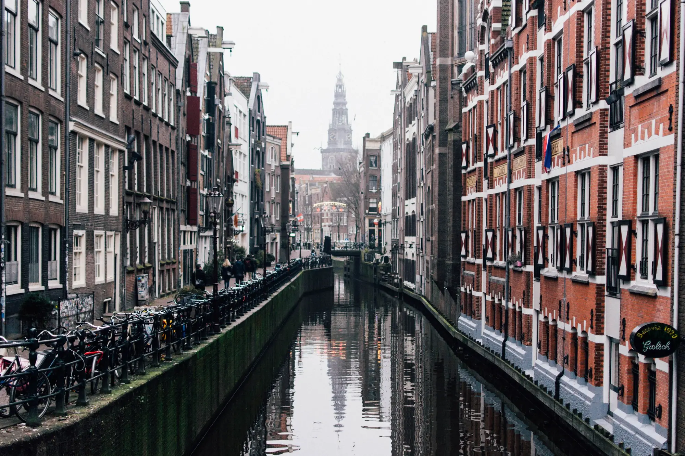
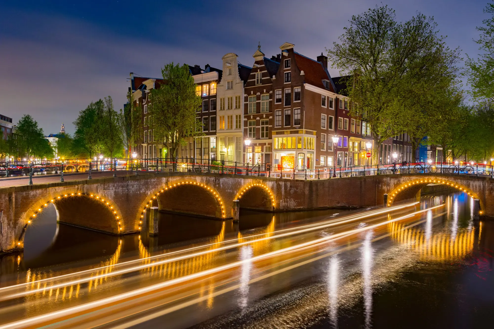

08:00 — 17:00
Dag
- Specialty koffie & thee
- Verse stroopwafels
- Daglicht
Coffeeshop · Amsterdam
Neon Tulp is een coffeeshop.
Het concept
Neon Tulp is een coffeeshop voor mensen die de tijd nemen.
Twee gezichten


De film
Gemonteerd uit vrije beelden.
Na zonsondergang
Scroll om te bladeren
De Kaart
Elke maand een nieuwe selectie.
Prijzen indicatief · concept
Begin laag, ga langzaam.
Het ritme van de dag
Gemiddeld aantal gasten per uur.
Huisregels
Geen ID, geen toegang.
Per persoon, per dag.
En geen harddrugs.
Het rookverbod geldt ook hier.
Ga langzaam.
Fluister op de brug.
Agenda
Bezoek
Tulpgracht 42 · 1016 AmsterdamFictief adres · concept
Tram 13 of 17
Geen reserveringen.